Lecturas y límites: 24 candidatos de entrenamiento
Revisión visual del asistente y cola para revisión independiente. No se aprueban etiquetas ni límites. Rojo: objetivo; cian: polígonos vecinos. Las alternativas de texto no son probabilidades ni una traducción.
f3r_w0004
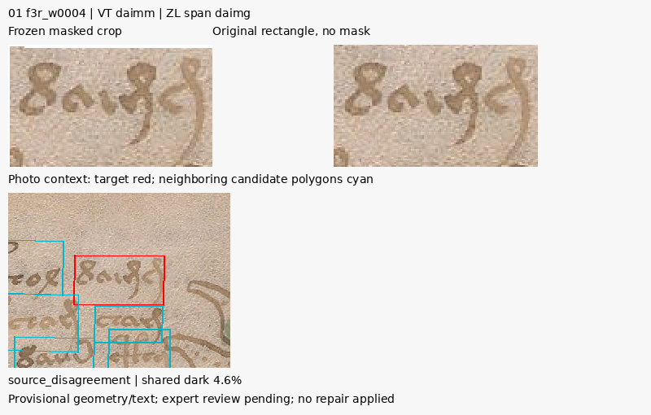
Locus f3r.1
VT: tsheos.qopal.chol.cthol.daimm
ZL: <%>tsheos.qopal.chol.cthol.daimg
letter_disagreement
Se ve un grupo de trazos con terminación descendente dentro del rectángulo. VT da daimm y ZL da daimg; la foto y esta revisión no adjudican m frente a g.
f3r_w0018
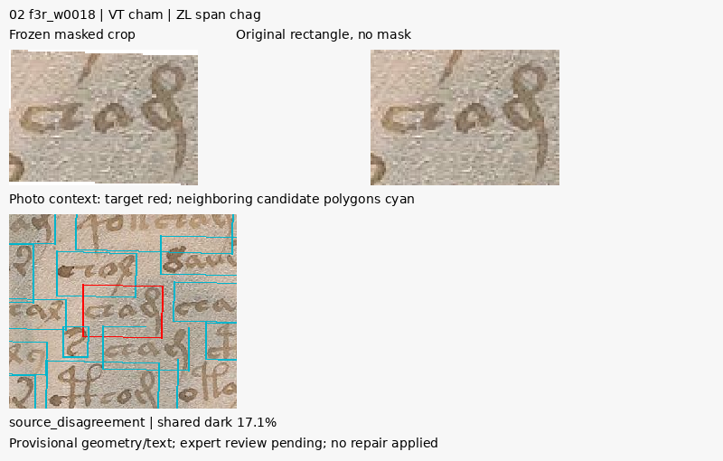
Locus f3r.4
VT: schey.chor.chal.cham.cham.cho
ZL: schey.chor.chal.chag.cham.cho
letter_disagreement
Se ve una terminación que desciende hacia el renglón inferior y polígonos vecinos próximos. Se conserva cham/chag como desacuerdo.
f3r_w0029
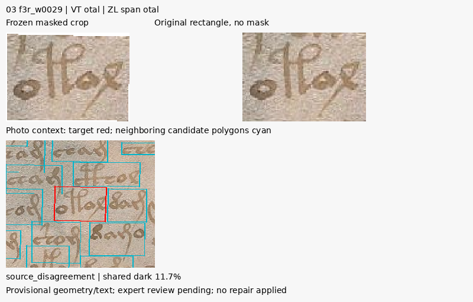
Locus f3r.6
VT: ychtaiin.chor.cthom.otal.dam
ZL: ychtaiin.chor.cthom.otaldam
boundary_disagreement
El contexto muestra el grupo anterior al grupo siguiente de w0030. VT separa otal.dam y ZL conserva otaldam; no se decide un límite lingüístico.
f3r_w0030
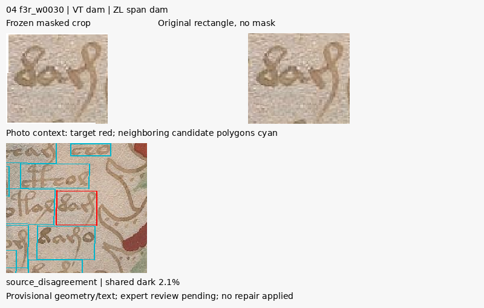
Locus f3r.6
VT: ychtaiin.chor.cthom.otal.dam
ZL: ychtaiin.chor.cthom.otaldam
boundary_disagreement
Grupo contiguo a w0029 en el mismo renglón, cerca de la ilustración. La presencia de una separación visual no certifica una palabra independiente.
f3r_w0040
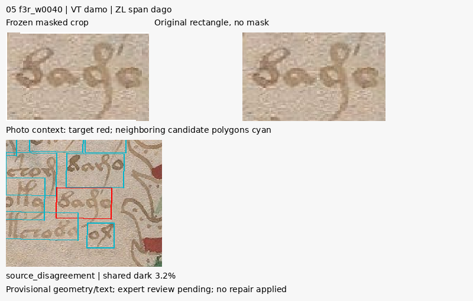
Locus f3r.8
VT: ysheor.chor.chol.oky.damo
ZL: ysheor.chor.chol.oky.dago
letter_disagreement
El rectángulo contiene una forma con trazo descendente. Se conserva damo/dago sin escoger una lectura.
f3r_w0041
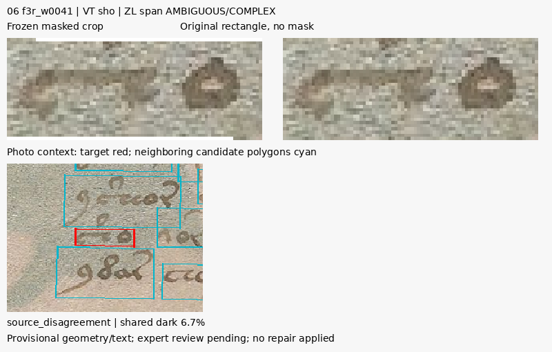
Locus f3r.9
VT: sho.or.sheoldam.otchody.ol
ZL: sho.vor.sheoldam.otchody.ol
alignment_ambiguous
Recorte corto con cuerpo de trazos a poca altura; los extremos de la alineación con sho.vor admiten más de un estado óptimo. No se asigna automáticamente v a una caja.
f3r_w0042
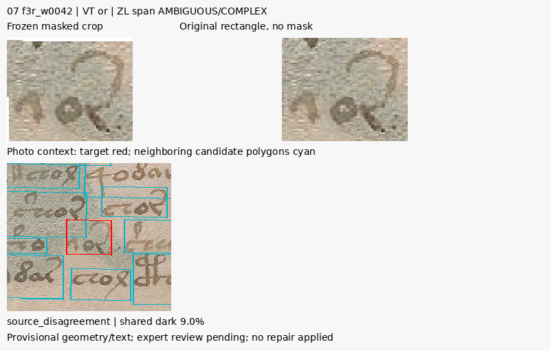
Locus f3r.9
VT: sho.or.sheoldam.otchody.ol
ZL: sho.vor.sheoldam.otchody.ol
alignment_ambiguous
El trazo del grupo contiguo se ve junto al anterior en contexto. El mismo desacuerdo sho.or/sho.vor no se resuelve por desempate de edición.
f3r_w0046
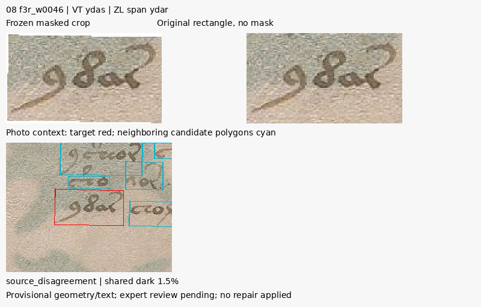
Locus f3r.10
VT: ydas.chol.cthom
ZL: ydar.cholcthom<$>
letter_disagreement
Grupo al final de una línea con trazo final curvo. Se conserva ydas/ydar como alternativas de fuente.
f6v_w0095
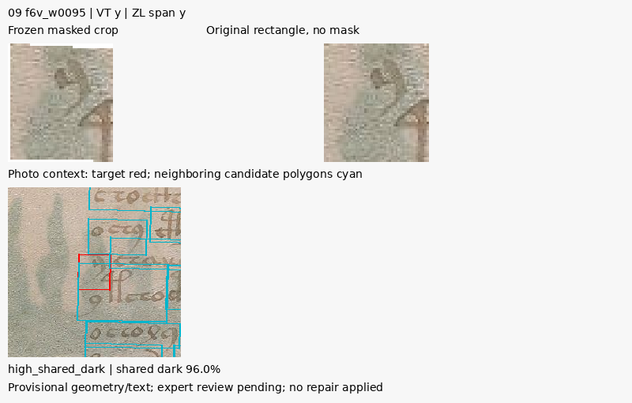
Locus f6v.17
VT: y.chaiir.ckhal.cthodam.dy
ZL: y,chaies.ckhal.cthodam.dy
uncertain_boundary
Caja estrecha con trazo descendente; queda dentro de la franja vertical de máscaras vecinas más grandes. La coma de ZL y,chaies indica duda sobre la separación.
f6v_w0001
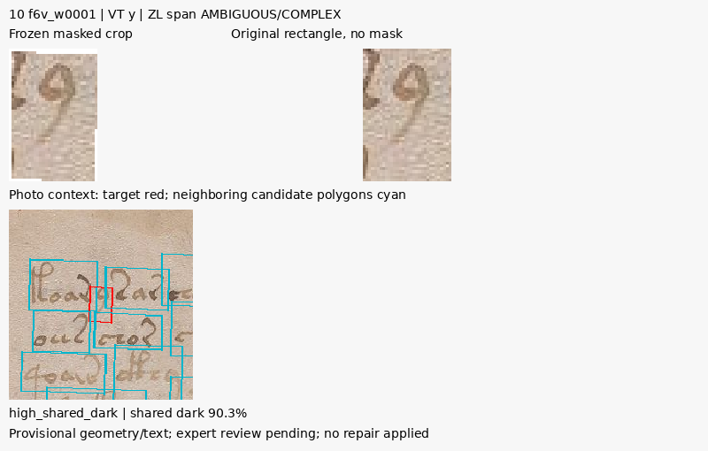
Locus f6v.1
VT: koar.y.sar.oheekar.qoar.shor.chapchy.s.chear.char.otchy
ZL: <%>koary,sar.[ch:{oh}]eekar<!funny o, @246;?>.qoor.shor.chapchy.s.chear.char.otchylocus_not_literal
Caja muy estrecha junto al grupo inicial de línea y dentro de otra máscara extensa. Su alto solapamiento no demuestra que el trazo pertenezca a otra palabra.
f6v_w0096
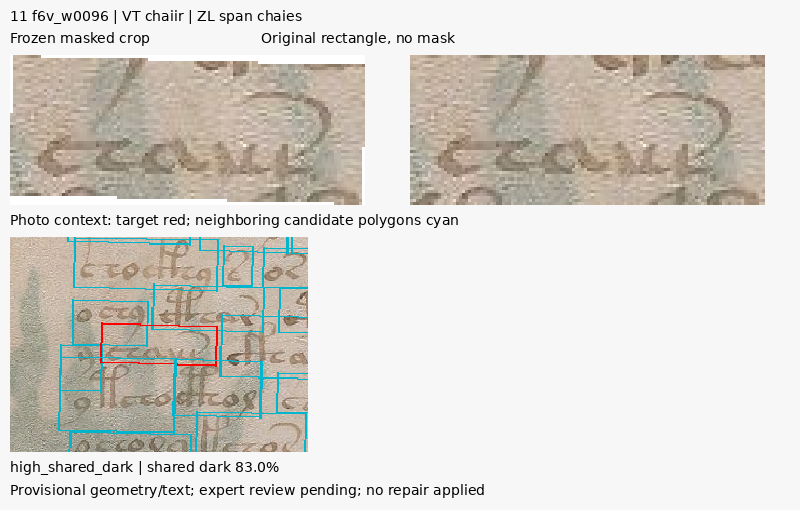
Locus f6v.17
VT: y.chaiir.ckhal.cthodam.dy
ZL: y,chaies.ckhal.cthodam.dy
letter_disagreement, uncertain_boundary
La franja del recorte incluye cuerpo de texto y parte de un trazo alto en contexto. La extensión de las máscaras vecinas coincide con gran parte de la caja objetivo.
f3v_w0057
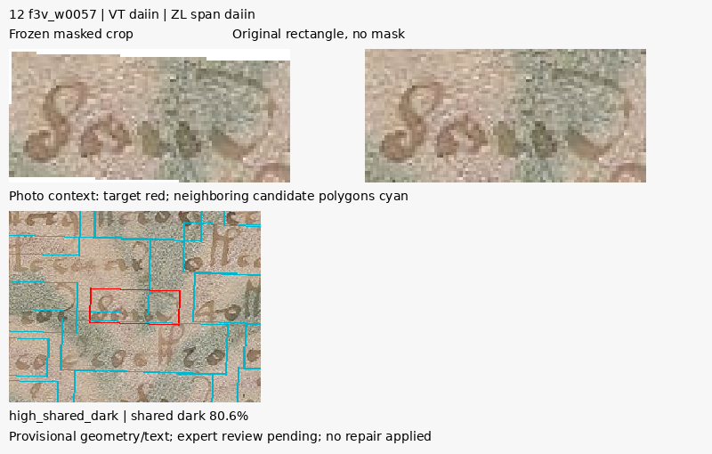
Locus f3v.10
VT: ochor.daiin.qokshol.daiim.chol.okary
ZL: ochos.daiin.qokshol.daiim.chol.okary
No flags in literal source projection
El rectángulo alcanza trazos del entorno por arriba y debajo del cuerpo central. El acuerdo literal daiin no certifica pureza del recorte.
f6r_w0037
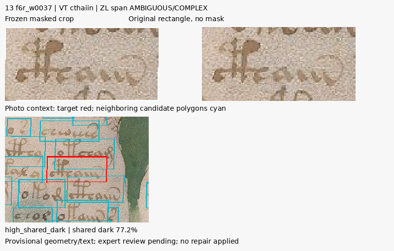
Locus f6r.5
VT: tar.okoiin.shees.ytaly.cthaiin.odam
ZL: t[a:o]r.okoiin.shees.ytaly.cthaiin<->odam
locus_not_literal
El rectángulo muestra un trazo alto por arriba del grupo y trazos próximos bajo él; máscaras de renglones próximos se superponen. Fuente compleja no resuelta.
f6v_w0066
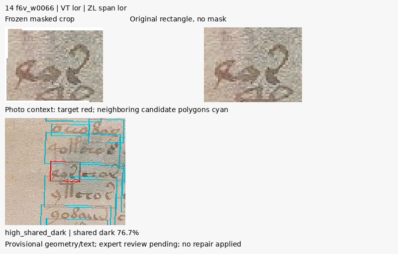
Locus f6v.11
VT: lor.char.otam.cthom.dy
ZL: lor.char.otam.ctho,m,dy
No flags in literal source projection
Grupo pequeño en una banda estrecha de texto, solapado por máscaras vecinas extensas. El acuerdo lor se conserva sin aprobar la caja.
f6v_w0072
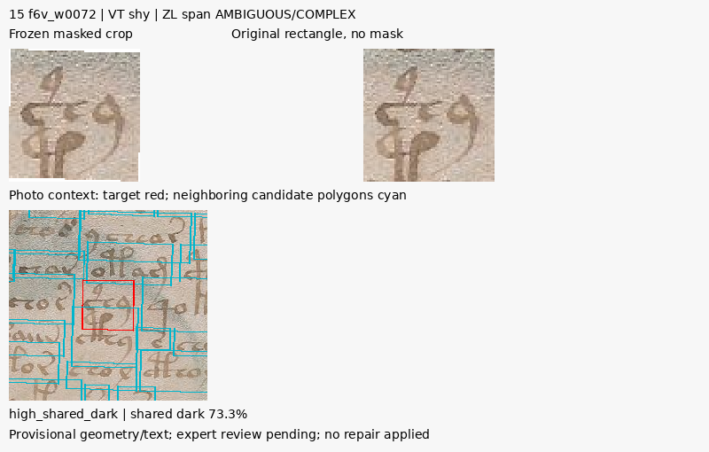
Locus f6v.12
VT: ytchos.shy.qokam.cthy
ZL: ytcho[s:r].shy.qokam.cthy
locus_not_literal
Se observan trazos altos y trazos cercanos de otra altura dentro del rectángulo; contexto de varias filas. No se reasigna tinta ni texto.
f6v_w0064
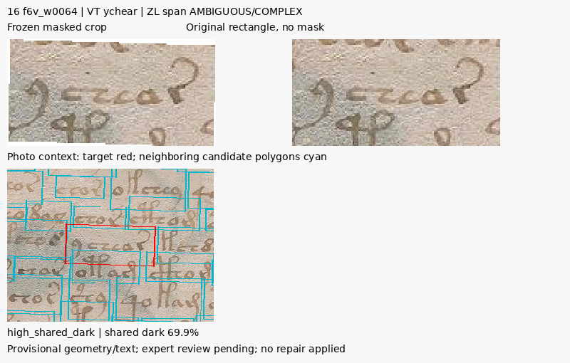
Locus f6v.10
VT: qokche.ychear.kchdy
ZL: qokchod.ychear.kchdy
alignment_ambiguous
La banda de extracción incluye un descendente por arriba y un trazo alto por debajo. Los extremos de la alineación siguen ambiguos.
f3r_w0020
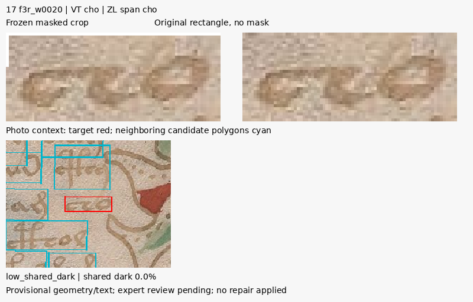
Locus f3r.4
VT: schey.chor.chal.cham.cham.cho
ZL: schey.chor.chal.chag.cham.cho
No flags in literal source projection
Recorte bajo y estrecho, con espacio claro alrededor del grupo central en el contexto. Cero solapamiento oscuro bajo este umbral no certifica transcripción.
f3r_w0045
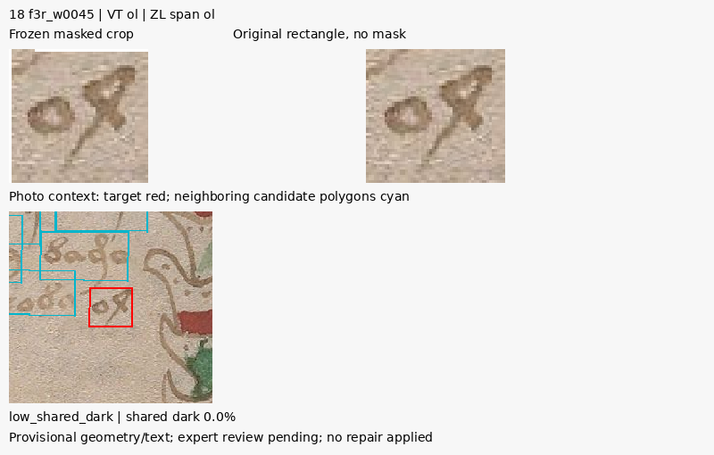
Locus f3r.9
VT: sho.or.sheoldam.otchody.ol
ZL: sho.vor.sheoldam.otchody.ol
No flags in literal source projection
Grupo corto y aislado en el contexto mostrado; no aparece un conflicto oscuro con las otras máscaras al umbral fijado.
f3r_w0047
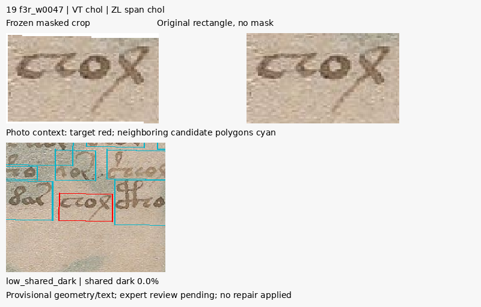
Locus f3r.10
VT: ydas.chol.cthom
ZL: ydar.cholcthom<$>
boundary_disagreement
Grupo visible separado de los vecinos por espacios en la foto. Aun con cero solapamiento oscuro, las fuentes discrepan en una frontera textual.
f3r_w0052
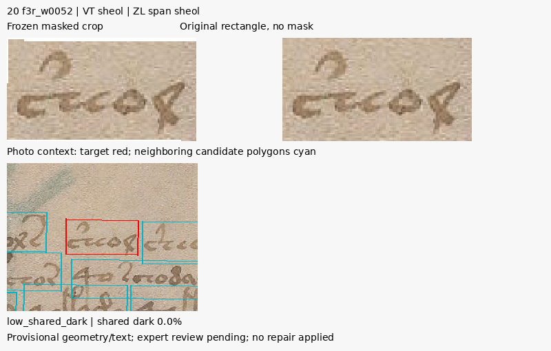
Locus f3r.11
VT: pcheol.shol.sols.sheol.shey
ZL: <%>pcheol.shol.sols.sheol.shey
No flags in literal source projection
Rectángulo bajo alrededor del grupo central, con renglones vecinos visibles en contexto. Acuerdo de fuente conservado como candidato.
f3r_w0069
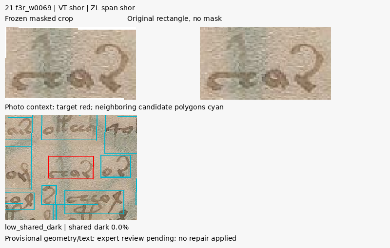
Locus f3r.15
VT: tsheoarom.shor.or.chor.olchsy.chom.otchom.oporar
ZL: <%>tsheoarom.shor.or.chor.olchsy.chom.otchom<->oporar
No flags in literal source projection
Grupo con trazo final alto dentro de su caja y espacio libre lateral. No se aprecia un conflicto de máscaras oscuras bajo el umbral.
f3r_w0070
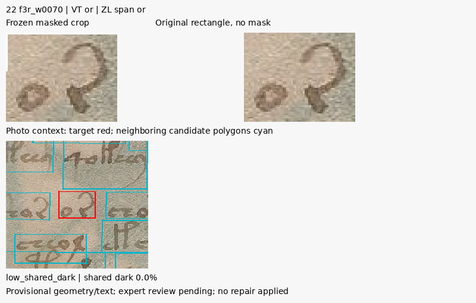
Locus f3r.15
VT: tsheoarom.shor.or.chor.olchsy.chom.otchom.oporar
ZL: <%>tsheoarom.shor.or.chor.olchsy.chom.otchom<->oporar
No flags in literal source projection
Grupo pequeño junto al anterior y cerca del margen derecho de texto. Se conserva como control de bajo solapamiento.
f3r_w0075
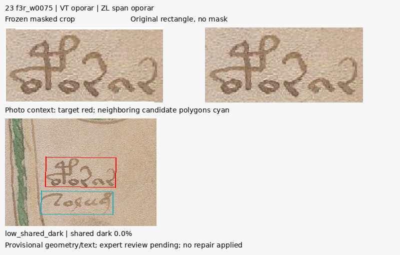
Locus f3r.15
VT: tsheoarom.shor.or.chor.olchsy.chom.otchom.oporar
ZL: <%>tsheoarom.shor.or.chor.olchsy.chom.otchom<->oporar
No flags in literal source projection
Grupo con dos trazos altos bien visible y separado verticalmente del inferior en el contexto. Candidato de bajo solapamiento.
f3r_w0084
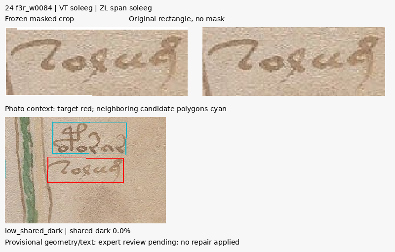
Locus f3r.16
VT: oteol.chol.s.cheol.ekshy.qokeom.qokol.daiin.soleeg
ZL: oteol.chol.s.cheol.ekshy.qokeom.qokol.daiin<->soleeg
No flags in literal source projection
Grupo bajo el anterior con margen de pergamino alrededor. Acuerdo literal y baja repetición de posiciones no equivalen a revisión paleográfica experta.